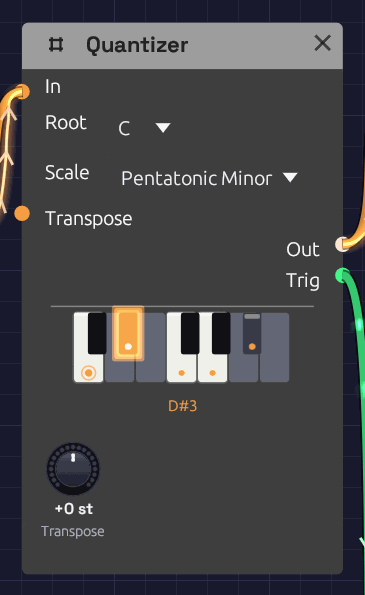

Quantizer
Module ID util.quantizer · Category Utility

C minor pentatonic: its five keys are lit, the root C is ringed, and D#, the note playing now, glows.A Quantizer snaps a pitch to the nearest note of a scale. Random voltages, LFOs and Sample & Hold can produce any pitch at all, most of them between the keys of a piano. Through a Quantizer, every one of them lands on a note of the key you choose, so chance plays melodies.
The node shows its scale on a one-octave piano. Keys in the scale are lit and carry a dot, and the root's dot is ringed. Keys outside the scale are dimmed. The note the Quantizer is playing glows, and its name appears under the keys. Click a key to add it to the scale or take it out, and the Scale menu switches to Custom.
The Quantizer is polyphonic. Patch in a polyphonic cable and each voice is quantized on its own, so a chord from Poly MIDI comes out as a chord in the scale. The piano lights every note playing.
Inputs
| Port | Signal Type | Description |
|---|---|---|
| In | Control (Orange) | The pitch to quantize, in V/Oct: 0 is C4, +1 is C5, -1 is C3, as on MIDI Note |
| Transpose | Control (Orange) | Added to the Transpose knob, in V/Oct and rounded to whole semitones. A sequencer's Pitch here moves the key by the interval it plays |
Outputs
| Port | Signal Type | Description |
|---|---|---|
| Out | Control (Orange) | The nearest note of the scale, plus Transpose, in V/Oct |
| Trig | Gate (Green) | A 10 ms pulse each time Out moves to a new note, and never while it holds one |
Parameters
| Control | Range | Default | Description |
|---|---|---|---|
| Root | C – B | C | The scale's first note |
| Scale | See below | Major | Which notes Out may play |
| Transpose | ±12 st | 0 st | Shifts Out, and so the key, in semitones |
Scales
| Scale | Notes in C | Sound |
|---|---|---|
| Chromatic | all twelve | Every semitone. Steps pitches without choosing a key |
| Major | C D E F G A B | Bright, settled |
| Natural Minor | C D E♭ F G A♭ B♭ | Dark, sad |
| Dorian | C D E♭ F G A B♭ | Minor, with a hopeful sixth |
| Mixolydian | C D E F G A B♭ | Major, with a bluesy seventh |
| Harmonic Minor | C D E♭ F G A♭ B | Minor, with a tense, exotic leading note |
| Pentatonic Major | C D E G A | Five notes with no half steps: nothing clashes |
| Pentatonic Minor | C E♭ F G B♭ | The same calm, in minor. Rock and blues riffs |
| Blues | C E♭ F G♭ G B♭ | Minor pentatonic plus the "blue" flat fifth |
| Whole Tone | C D E F♯ G♯ B♭ | Every step a whole tone: dreamy, without a home |
| Custom | the keys you click | Your own scale, saved with the patch |
How it works
The input is measured in semitones, and Out takes the scale note closest to it. A pitch exactly between two scale notes can go either way, so the Quantizer adds a little hysteresis: once on a note, it stays there until the input passes the halfway point by a fifth of a semitone. A slow LFO wobbling at a boundary then holds one note instead of chattering between two.
Transpose is added after quantizing. With C major and Transpose at +2, a melody plays in D major, a step higher. To keep the register and only change the key, turn Root instead.
Trig fires on every change of Out, whether the input moved, the scale changed or Transpose did. If notes change faster than 10 ms apart, each still gets a pulse of its own: Trig drops for one sample between them.
Custom scales
Click keys on the piano to build any scale. The first click copies the current scale into Custom and toggles that key, so you can start from a scale you know and bend it: take E and B out of C major for a bare, open sound, or add F♯ to C major for Lydian.
A Custom scale is stored as a pattern above the root, so changing Root carries it to the new key. With every key turned off, the Quantizer passes its input through unquantized (Transpose still applies), and Trig stays quiet.
Patches
A random melody, in key
[Clock Gate] ──> [Sample & Hold Trig]
[Noise White] ──> [Sample & Hold In]
[Sample & Hold Out] ──> [Quantizer In] (Root C, Scale Pentatonic Minor)
[Quantizer Out] ──> [Oscillator V/Oct]
[Quantizer Trig] ──> [ADSR Gate] (Atk 5 ms, Dec 300 ms, Sus 0)
The classic random melody from the Noise page, now in C minor pentatonic. Trig strikes the envelope only when the note changes, so a repeated note is held rather than struck again, and the phrasing breathes.
An LFO that plays scales
[LFO Out] ──> [Quantizer In] (LFO Triangle, Bipolar, 0.25 Hz)
[Quantizer Out] ──> [Oscillator V/Oct]
[Quantizer Trig] ──> [ADSR Gate]
A triangle LFO sweeps up and down an octave either side of C4, and the Quantizer turns the sweep into a scale run, each note plucked by Trig. Raise the LFO's rate and the runs become arpeggios.
A wandering voice
[Noise Random] ──> [Quantizer In] (Noise Rate 0.2 Hz)
[Quantizer Out] ──> [Oscillator V/Oct]
Random glides rather than jumps, so the Quantizer walks to each new value one scale step at a time. The result is a slow melody that moves by step, on its own schedule. The Generative Ambient example sings a descant this way.
Changing key from a sequencer
Patch a Step Sequencer's Pitch into Transpose. A step on C4 leaves the key alone, F4 moves it up a fourth, G3 down a fourth, so a slow sequence of steps becomes a chord progression for whatever is playing through the Quantizer.
Related modules
- Sample & Hold: turns a moving voltage into steps to quantize
- Noise: random voltages, smooth or stepped
- LFO: regular sweeps that become scale runs
- ADSR Envelope: strike it from Trig